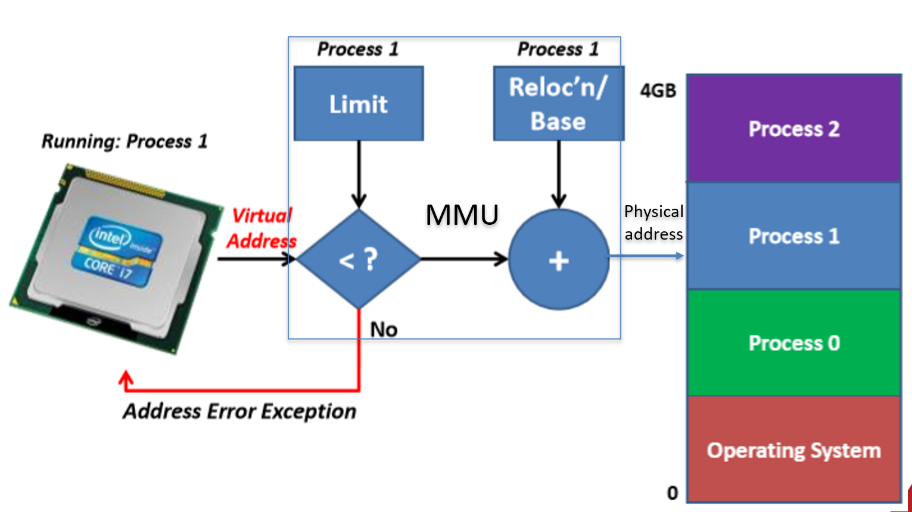

操作系统复习
计算机专业课程笔记
Chapter 1
updated in 2023.1.13
- Monolithic OS（单一型）的优缺点？（单一型是os类型之一，用户和系统放在一起）
-
优：(1) efficient; (2) better performance
-
缺：(1) Difficult to impose security; (2) difficult to maintain
-
Layered OS：
-
优：security
-
缺：hard to manage; weak performance
-
-
Micro-Kernel OS (微内核os)：
-
优：security；extensible
-
缺：inefficient
-
-
Library OS (库操作系统)：
-
优：libraries provide additional security and personality
-
缺：less consistency(缺乏稳定性)
-
-
计算机共享的资源
-
memory (global、head)
-
hardware devices （CPU）
-
Chapter 2
updated in 2023.1.13
-
One or more threads in a single process
-
Thread: smallest sequence of instructions managed independently by scheduler.
-
Scheduler: method for how work is assigned to resources to complete work
-
-
Concurrency & parallelism (并发和并行)的区别？
-
Concurrency: How multiple, independently controlled processes behave when running and interacting with each other.
-
Parallelism: Multiple (n > 1) processes executing simultaneously.
-
对于并发，在同一时间点任务不同时execute；对于并行，在同一时间点任务一定同时execute，并发和并行都是针对process而言的
-
Processes are always concurrent, but not always parallel 进程永远是并发的，但不一定是并行的
-
-
怎样创建一个线程：通过implement Runnable 类，里面有一个public void run( ) 方法
-
Define class R which implements Runnable
-
Create your objects
- Make an instance of class R
- Make a thread instance by passing instance of class R to the constructor of class Thread
-
Class start() method of the thread instance
- This causes java to immediately execute R.run() as a new thread
-
-
替代方法还可以创建一个类继承Thread类，理论上和实现Runnable是一样的
public class MessagePrinter extends Thread { String message; public MessagePrinter(String m) { message = m; } public void run() { for(int i = 0; i < 1000; i++) System.out.println(message); } } -
-
Processor（处理器）, program（程序）, process（进程） 三者区别？
-
Processor: Hardware device that executes machine instructions
-
Program: Instruction sequence; Stored on disk 指令集；存储在硬盘上
-
Process：active system entity that executes associate program 积极的系统实体
-
Program may be executed by multiple processes at the same time
-
Process can run multiple programs. (多个thread)
-
-
When do we not have to worry about concurrency?
-
no shared data or communication
-
read only data
-
-
并发编程的好坏
-
+：更快运行算法，实现操作系统和网络内部 make algorithms run faster Implement OS and networking internals –> 处理同时传入的事件(用户和网络)
-
+：保证代码最后会运行，不会饿死 code will eventually run, with no starvation because of priority
-
-：不保证公平性fairness 和及时性timeliness
-
公平性(每个进程运行相同的时间)
-
及时性(进程在理想的时间框架内完成)
-
-
-：并发时， scheduler 调度程序是不利的 期待进程做最不好的事
-
-
process VS thread
-
process
-
is allocated independent address space分配独立地址空间
-
heavier-weight context switch 重量级上下文切换
-
support thick-grained concurrency 支持粗粒度并发
-
-
thread
-
share a common address space 共享地址空间
-
lighter-weight context switch 轻量级上下文切换
-
support fine-grained concurrency 支持细粒度并发
-
-
Chapter 3
updated in 2023.2.16
-
为什么要用并行？（两个原因）
-
Moore’s Law(硬件): Number of transistors in dense(密集) integrated circuits doubles every 2 years.
-
Amdahl’s Law(软件)：Speed up is limited by the serial（程序串行） part of the program
-
-
同步 synchronization
-
competition VS cooperation 竞争同步 VS 合作同步
-
竞争：ensure multiple concurrent threads do not execute at the same time (simultaneously) in the program critical section
-
临界区：critical section 一次只能进一个进程
- 其属性：mutual exclusion, bounded waiting, performance, fairness, progress
- mutual exclusion 互斥：only one thread can run in the critical section at any given time 任何时候只有一个进程能在临界区中运行（它限制多个进程对资源的访问）
-
竞争条件：race condition
-
定义：由于多个进程以不受控制的方式在一段非原子代码中“竞争”而发生的错误 a error that occurs due to multiple processes race in an uncontrolled manner though a section of non-atomic code
-
何时出现：如果多个正在执行的线程几乎同时进入一个代码临界区，并且两个线程都试图更新共享数据 when multiple executing processes enter a code critical sections at the same time, and multiple try to update shared data
-
-
确定性
-
indeterminate VS determinate
-
不确定：每次得到不同结果（骰子）
-
确定：每次得到相同结果
-
-
-
-
合作：manage the order or time to ensure threads access system resources correctly 确保线程正确地访问系统资源（A和B说我用好了，给你用）
- 例：先put后get
-
-
建立临界区的4种方法？
-
Lock: - 设置两个状态held/not held，held表示有线程在critical section - acquire代表需要lock，release代表不需要lock

acuqire( ) and release( ) -
Monitors
- Semaphores
- Message
-
-
Atomic
-
A property of a sequentially-executed section of code
-
A context switch can’t happen (by definition) while an atomic section of code is being executed
-
Lock acquire( ) only blocks threads attempting to acquire the same lock. Must use same lock for all critical sections accessing the same data.
-
Three steps of context-switching sequence
-
De-schedule currently-running thread
-
Scheduler selects ‘best’ ready thread to run next
-
Resume newly-selected thread
-
Chapter 4
updated in 2023.2.16
-
信号量（改错）：
typedef struct _sem { int val; /* semaphore value*/ Queue queue; /* oper: put, get*/ } Sem void P(Sem s) { /* wait() procedure */ s->val = s->val - 1; if (s->val < 0) { put(s->queue, getpid()); /* queue of PIDs */ sleep(getpid()); } } void V(Sem s) { /* signal() procedure */ s->val = s->val + 1; if (s->val >= 0){ wakeup(get(s->queue)); } }-
P等同于wait，V等同于signal
-
sleep是通过把这个线程放到waiting queue中来block这个线程 -
wakeup是唤醒waiting queue中的线程，并放到running queue中
-
-
P，V操作如何在java和C下实现的？
-
Java: wait() & notify()
-
C: acquire() & release()
-
Unix: sleep() & wakeup()
-
Distributed system分布式系统（Message Passing）: send() & receive()
-
-
虚假唤醒（Spurious wakeup）是考试中一道大题
public class Semaphore { private int count = 0; public Semaphore(int init_val){ count = init_val; } public synchronized void P() { count = count - 1; if (count < 0) wait(); } public synchronized void V() { count = count + 1; notifyAll(); } }-
什么时候会引起虚假唤醒？
-
Answer: Does not recheck the condition，把P中的
if改为while
-
-
编程题： put() get()操作
public class BoxDimension{ private int dim = 0; private Semaphore sem = 1; public void put(int d) { dim = d; sem.signal(); } public int get() { sem.wait(); return dim; } } BoxDimension d = new BoxDimension(); -
Java中的semaphore
public class Semaphore { private int count = 0; public Semaphore(int init_val) { count = init_val; // Should check it’s >= 0 } public synchronized void P() { count = count - 1; while (count < 0) wait(); // why not ‘if’? } public synchronized void V() { count = count + 1; /* if there is one, wake a waiter; */ notifyAll(); /* why not use ‘notify()’? */ } }-
P中要使用
while来判断是否要wait，因为如果条件满足要一直wait -
V中要使用
notifyAll()，而不是notify()，因为notify()会导致deadlock
-
-
在java中，用信号量实现互斥——编程题
-
如果题中没给 Semaphore类， 那就
public class Bank{ private Semaphore mutex=1; public void update(int amout) { mutex.wait(); bal = bal+amount; mutex.signal(); } } -
如果给了Semaphore类，其中说明了P(),wait(), V(), notify/notifyAll() 那就
public class Dimension { Semaphore mutex = new Semaphore(1); }
-
Chapter 5
updated in 2023/2/9
-
Synchronous message-passing model (rendezvous) doesn’t allow the producer to get ahead of the consumer. This limits concurrency. 同步消息传递模型不允许生产者先于消费者。这限制了并发性。
-
message passing definition
Processes communicate by sending & receiving messages using primitives (including synchronization)
-
同步消息传递
-
使用send和receive函数来进行消息的传递，call send函数的进程直到消息被接收到才会解除block，receive函数直到消息完全发出来才会解除block
-
sender:
send(msg, channel) -
receiver:
var = reveive(channel) -
e.g.
Sender() { messagetype item; item = produce_item(); chan.send(item); } Receiver() { messagetype item; item = chan.receive(); consume_item(item); } -
同步消息传递存在的问题
- 降低了并发性(reduce concurrency)
- client-server interaction
- When client releases a resource, usually no reason for waiting until the server has received the release message
- When client writes to a device (graphics display) it can usually continue without waiting for the sever to receive the message
-
-
异步消息传递
- 同样使用send和receive，但是call send函数的进程不会被block，receive函数直到一个消息发出来了就解除block
- 异步消息传递存在的问题
- Acknowledgement 确认
- Receiving process cannot know anything about the current state of the sending process 接收进程不知道发送进程的状态
- Sending process has no way of knowing if message was ever received unless the receiving process sends reply 发送进程不知道消息有没有收到
- difficult failure detection
- finite buffer space：如果同时发送太多的message，程序会crash，buffer会overflow，一些message可能会loss，从而会block发送进程
- Acknowledgement 确认
-
MP code
-
同步
producer() { messagetype item; while (TRUE) { item = produce_item(); chan.send(item); // send item on channel } } consumer() { messagetype item; while(TRUE) { item = chan.receive(); // receive item consume_item(item); } } -
异步
producer() { messagetype item; while (TRUE) { item = produce_item(); credit = credit_chan.receive(); // wait for a credit data_chan.send(item); // send item } } consumer() { messagetype item; // Prime producer with N credits... for (int i=0 i<N; i++) credit_chan.send(credit); while(TRUE) { item = data_chan.receive(); // receive item credit_chan.send(credit); // send back credit consume_item(item); } }
-
Chapter 6
updated in 2023/2/11
-
Blocking(直接阻塞) 和 Spinning lock(自旋锁)比较：
-
Blocking：Scheduler blocks threads while they wait
- 优点：Good for long critical sections
- 缺点：Costly if lock accessed lots（锁访问得多就代价高）
-
Spinning: Sit in a tight loop until lock acquisition
- 优点：Good for short critical sections
- 缺点：Costly for long critical sections
-
-
自旋锁的实现
普通的自旋锁
void get_lock (int *lk) { while (*lk ==1); // 如果lk不是1，跳出循环，拿到锁 *lk = 1; // Claim the lock } void release_lock (int *lk) { *lk = 0; //Let someone else claim lock }- 上面的代码有问题，如果两个进程同时调用
while(*lk = 1)的话，会违反mutual exlusion，解决方案是在此处使用disable_interrupts();函数，因为同时访问critical section只会在发生中断的情况下发生；然后在释放锁的时候调用reenable_interrupts();函数，来重新启用中断 - 无论如何，上面的代码还是有很多缺陷，例如中断被长时间禁用、release_lock忘记启用中断等，所以依旧不是一个好的解决方案
void get_lock (int *lk) { try_again: disable_interrupts(); if (*lk ==1); // Lock taken { reenable_interrupts(); //permit context switch go to try_again; //spin } *lk = 1; // Claim the lock Reenable_interrupts(); } void release_lock(int *lk) { *lk = 0; //Let someone claim lock }- 这个版本的代码解决了中断使用的问题，但仍存在其他问题
机器指令（test_and_set）：通过硬件解决
boolean test_and_set(boolean *target) { boolean orig_val = *target; *target = TRUE; return orig_val; // 将target置为true但是并不更改返回的值，返回的还是原先的值 } void get_lock (int *lk) { while(test_and_set(lk) == 1) ; // wait } void release_lock(int *lk) { *lk = 0; //Let someone claim lock }Peterson’s Algorithm：通过软件解决（仅适用于两个线程！！！）
int tiebreak = 0; /* shared variable */ bool[] flag = {FALSE, FALSE}; /* shared variable */ void get_lock() { int pid = thread_getid(); int other = 1 - pid; flag[pid] = TRUE; tiebreak = other; while(flag[other] && tiebreak == other); /* spin */ } void release_lock() { flag[thread_getid()] = FALSE; }- 解释一下，如果同时有两个进程访问get_lock的话，如果另一个进程是false的话就会跳出循环，执行成功；如果另一个进程也是true，就会卡在while循环
- while这里是双重确认，任何一个条件都不能省略，因为另一个进程进来的时间是不可控的
- 上面的代码有问题，如果两个进程同时调用
-
monitor是什么？
- Concurrent control construct for synchronization and scheduling 用于同步和调度的并发控制结构
Chapter 7
updated in 2023.2.11
-
条件同步和锁的区别？
- 条件同步实现了互斥性，原子性，还实现了顺序执行（sequential execution）
- 锁实现了互斥性和原子性（Mutual repulsion, atomicity）
- 条件同步：多个进程有序地访问临界区 multiple processes or threads orderly access critical section
-
实现先put()再get()（增加一个布尔值done_put）：
public class Dimension { private int dim = 0; private boolean done_put = FALSE; public void synchronized put(int d) { dim = d; done_put = TRUE; notify(); } public int synchronized get() { while (!done_put) wait(); done_put = FALSE; return dim; } } -
notify()和notifyAll()的使用
- 一般使用
notifyAll()，不会导致死锁，但是效率低 - 在仔细考虑所有情况下的调度后可以使用
notify()，效率高
- 一般使用
-
基于优先级的barrier
public class Barrier { int highest = 0; int next_highest = 0; public void synchronized pause() { int p; if ((p = get_priority()) > highest) { //Compare thread priorities next_highest = highest; highest = p; } else if (p > next_highest) { next_highest = p; } do wait () while(p < highest); highest = next_highest; /*set highest for next time */ } /* Resume the paused thread with the highest priority */ public void synchronized resume_highest_priority() { notifyAll(); } } -
bounded counter
public class BoundedCounter implements IBoundedCounter { long count = MIN; public synchronized long value() {return count;} public synchronized void inc() { while(count == MAX) wait(); if (count++ == MIN) // notify if we were in ‘min’ state notifyAll(); // ... let any blocked decrementer resume } public synchronized void dec() { while(count == MIN) wait(); if (count-- == MAX) // notify if we were in ‘max’ state notifyAll(); // ... let any blocked incrementer resume } }if (count++ == MIN)指的是if (count == MIN)和count++，就算if不成立也会执行count++notifyAll()唤醒所有的线程（如果刚脱离最小，就可以减了，如果刚脱离最大，就可以加了）
Chapter 8
updated in 2023.2.11
-
fork():
- 产生父进程，return value>0; 产生子进程，return value=0 (
setjmp()andlongjmp())
- 产生父进程，return value>0; 产生子进程，return value=0 (
-
(必考) How many processes are created by the program as a function on n?
Answer: 2^n - 1
int main() { int i; for(i=0; i<4; i++) fork(); } // 2^4-1=15 -
线程(Thread)分哪三类？
-
User thread（用户线程）
-
Kernel thread（内核线程）
-
Language thread（语言线程）
-
-
User thread vs Kernel thread vs Language Thread
-
User thread:
- 优点：
- Cheap context switch;
- more flexible;
- easy to offer per-application scheduling policies
- 缺点：
- User threads in same process can’t execute on separate CPUs 同一个进程的线程不能执行在分开的CPU上;
- If the system call called by a thread blocks, all other threads in the process will block 如果线程调用的系统调用阻塞了， 所有其他在进程中的线程都会阻塞
- 优点：
-
Kernel thread – supported by OS:
-
potentially more concurrent, especially on multicore 更加并发，尤其在多核
-
more predictability useful for real-time applications 对于实时app可推断的
-
more fast and reliable 更快速可靠
-
-
Language thread:
- Available only in particular language environments
- 既可以是user，也可以是kernel
-
区别：
-
User threads require no support from the OS
-
Kernel threads are supported by the OS
-
-
Chapter 10
updated in 2023.2.11
-
Common pitfalls in concurrent programming(常见的陷阱类型)：
-
Non-correctness: introduce subtle programing errors 引入微小的编程错误
-
Deadlock: 两个或多个线程被阻塞，永远等待对方放弃资源
-
Livelock
-
Flawed mutual exclusion
-
-
引发死锁的原因
- Mutual exclusion of resources 资源互斥
- Hold and wait
- Non-preemption of resources 不抢占资源
- Circular wait 循环等待
-
解决这个死锁
Lock1.acquire() Lock2.acquire() Lock1.release() Lock2.release()answer:
Lock1.acquire() Lock2.acquire() Lock2.release() Lock1.release() -
皮特森算法例子
non-correct
int[] flag = {FALSE, FALSE}; /* shared */ public void get_lock() { int pid = Thread.currentThread(); int other = 1 - pid; while(flag[other]); /* other’s flag is raised */ flag[pid] = TRUE; /* raise my flag */ } public void release_lock() { flag[Thread.currentThread()] = FALSE; }-
注意这里while循环在赋值true之前，说明还没有到争抢资源的地方，就卡在循环里了，所以不是deadlock而是non-correct
-
修改方法：
tiebreak = 0; // 初始化 /* 在函数中 */ flag[pid] = TRUE tiebreak = other while(flag[other] && tiebreak == other);
deadlock
int[] flag = {FALSE, FALSE}; /* shared */ public void get_lock() { int pid = Thread.currentThread(); int other = 1 - pid; flag[pid] = TRUE; /* raise my flag */ while(flag[other]); /* other’s is set */ } public void release_lock() { flag[Thread.currentThread()] = FALSE; }- 这里有可能两个进程都被赋值true，造成争抢资源，死锁
- 修改方法同上
livelock
int[] flag = {FALSE, FALSE}; /* shared */ public void get_lock() { int pid = Thread.currentThread(); int other = 1 - pid; try_again: flag[pid] = TRUE; /* raise my flag */ if (flag[other]) { /* check other’s flag */ flag[pid] = FALSE; /* lower mine */ goto try_again; } } public void release_lock() { flag[Thread.currentThread()] = FALSE; }- 为什么是livelock？有可能同时变为true，又同时变为false
-
Chapter 11
updated in 2023.2.12
Chapter 12
updated in 2023.2.12
-
Memory Mapped I/O & Isolated I/O 的优缺点？
-
Memory Mapped I/O ： Easily accessed using C pointers
-
Isolated I/O : Easier interfacing (连接); must use assembler(汇编器)
-
-
Device Driver（设备驱动） Tasks：
-
I/O Scheduling （I/O调度）
-
Buffering, Spooling（假脱机；多任务缓冲处理；） and Caching
-
Error Handling
-
I/O Protection
-
Chapter 13
updated in 2023.2.12
-
虚拟地址和物理地址（动态地重新映射地址）
-
Virtual Address
- Process always sees addresses 0…n
-
Physical Address
- Varies depending on where process loaded in memory
-
虚拟地址转换成物理地址：通过MMU (memory management unit)

-
-
segementation 分段
-
分段表，存储base和limit，这时候limit的物理地址应该是base + limit
base limit 0x1200 0x100 0x2000 0x400 -
分段特点 段号s + 段内偏移量addr。段大小不一致。
-
分段寻址流程
- 根据段号查找段表获取段起始地址和limit
- 根据段起始地址和limit检查地址安全
- 根据段起始地址和偏移量获取物理地地址
-
运行的时候重定位
-
-
paging 分页
-
分页含义 划分物理内存至固定大小的帧，帧是非连续的物理内存，划分逻辑地址空间至相同大小的页，页是连续的虚拟内存
-
物理地址：帧号+帧内偏移量
-
一个内存物理地址是一个二元组
(f, o) -
f是帧号 -
o是帧内偏移，每一帧有 2^s 字节 -
物理地址 $$ physical address = 2^s \times f + o $$
-
-
逻辑地址：页号+页内偏移量（其中帧内偏移量=页内偏移量而帧号不一定等于页号）
- 页内偏移大小 = 帧内偏移大小
- 一个逻辑地址是一个二元组
(p, o) - p是页号
- o是页内偏移，每页有2^s 字节
-
分页寻址流程：
- 根据逻辑地址计算页号
- 在页表找到对应的页帧号
- 加上偏移量得到物理地址
-
-
Variable（分段） vs. Fixed Sized （分页）Schemes 优缺点？
-
Variable/ Dynamic allocation schemes
-
Allocate requested amount of memory
-
产生External fragmentation
-
-
Fixed size schemes
-
Always allocate memory in fixed-sized blocks
-
产生Internal fragmentation （比External fragmentation问题少）
-
-
-
Dynamic Storage Allocation 动态内存分配
- 三种方法：
- first fit 总是去申请找到的第一个合适大小（放得下）的内存
- best fit 找到和这个内存相差最小的内存（找最小的能放得下的）
- worst fit 找到和这个内存相差最大的内存（找最大的能放得下的）
- Fragmentation 碎片化
- 在first和best方法中，最有可能产生碎片
- 碎片空间的sum可能很大
- 需要复杂的de-fragmentation
- worst方法旨在解决这个问题，通过使用最大的内存来增大后期分配的可能性 (increase chance of later allocation)
- 三种方法：
-
Dynamic allocation schemes vs Fixed size schemes
- Dynamic allocation schemes
- Allocate requested amount of memory 分配请求的内存量
- 产生外部碎片 external fragmentation
- Fixed size schemes
- allocate memory in fixed-sized blocks 在固定大小的块中分配内存
- 产生内部碎片 internal fragmentation
- 区分概念：Dynamic allocation schemes指的是分段，Fixed size schemes指的是分页，三种fit都是分段的方法
- Dynamic allocation schemes
Chapter 14
updated in 2023.2.12
-
Demand Paging和Page fault区别？
-
Demand Paging 请求调页：需要的页在memory中没有，OS调进来
-
Page fault 缺页中断：在物理内存中找不到需要的页
-
是发生了page fault之后进行demand paging操作吗？
-
-
flag
- present flag：如果为present，说明page在内存中，反之说明其在disk中
- dirty flag：dirty代表已经修改的数据，需要重新写入disk；如果not dirty则不需要重新写入
-
Page Frame Replacement: Swapping(交换)
-
Take Page Fault
-
If we have a free/ empty frame available in memory
-
Select for use Else
-
Identify a victim frame
-
-
Write (swap out) current content of victim to disk
- Adjust Page Tables: Mark victim as not present/ invalid
-
Read requested page from disk into identified frame
- Adjust Page Tables: Mark new page entry as present
-
Restart process
-
-
换出算法
FIFO: First-In-First-Out
- 如果有新进来的，舍弃最早进来的

FIFO
LRU: Least Recently Used
-
选最近最长一段时间最少使用的置换
-
LRU的实现：每页维护一个时间戳，选择最小时间戳的页淘汰
-
这种更新时间戳的方法耗时太长，不可取

LRU 
维护时间戳 -
维护一个页码栈，最下面的就是最近最少使用的
-
实现的代价仍较大

维护页码栈 -
近似实现，用引用位的0和1近似最近最少使用
-
clock算法：有缺陷，如果缺页很少会退化成FIFO -> 定时清除R位，增加一个扫描指针

clock算法
- 如果有新进来的，舍弃最早进来的
-
Each process has Page Fault Frequency (缺页中断频率)
- Low: Working Set may be too large
- High: Working Set too small
-
Buddy算法
直接看一道题

Buddy算法 -
比较Buddy Allocation (Buddy 算法) & Slab Allocation
- buddy算法产生internal fragmentation，但是可以为一组对象一次分配内存
- slab allocation 产生little fragmentation并且fast allocation for objects
- 把buddy和slab结合使用：大的area用buddy，Sub-divide areas into common sizes as slabs
- Slab allocation 可以参考[这个网站](https://blog.csdn.net/qq_43769572/article/details/122817116?ops_request_misc=%7B%22request%5Fid%22%3A%22167627174116782425123098%22%2C%22scm%22%3A%2220140713.130102334..%22%7D&request_id=167627174116782425123098&biz_id=0&utm_medium=distribute.pc_search_result.none-task-blog-2~all~sobaiduend~default-1-122817116-null-null.142^v73^control,201^v4^add_ask,239^v1^control&utm_term=Slab Allocation&spm=1018.2226.3001.4187)
Chapter 15
updated in 2023.2.13
-
Cost to every process switch （每一个进程切换/schedule调度的花销）
-
Interrupt latency 中断延迟 (time taken to process interrupt)
-
Save current context (any process state)
-
Select next process
-
Load new context (recover any process state)
-
-
对于pre-emptive scheduling（可抢占调度），long Quantum & short Quantum 分别的优缺点？

pre-emptive scheduling - Long: less interactive, fewer switches; more efficient
- Short: more interactive, more switches; less efficient(因为开销大所以效率低)
-
考：Priority Scheduling(优先级调度) （P18）
-
Each process given a priority
- High-priority processes selected over lower ones
-
Multi-priority queues
- (typically) Round-Robin within each priority level
- Tasks in higher priority queue take precedence 优先级高的任务优先
-
-
必考：什么样的软件架构具有维护性（Maintainability）？
- fine-grained 细粒度
Chapter 16
updated in 2023.2.13
-
Dynamic Storage Allocation
-
First fit : Always allocate first region of sufficient size found
-
Best fit : Always allocate smallest memory hole of sufficient size
-
Worst fit : Always allocate largest memory hole (of sufficient size)
-
-
Scheduling 调度
-
Turnaround time
- Time between process submission and completion
- 最终完成的时刻-到达的时刻
- completion – arrival time
-
Waiting time
- Sum of time waiting in Ready Queue (i.e. it could run/ use CPU)
- dispatch time（开始执行时间） – arrival time
-
Response time
- Time between submission and start of first output/ interaction
-
Complete time
- 最终完成的时刻-开始的时刻
-
-
Round Robin（RR）

RR -
分页替换： FIFO; Least Recently Used
-
Buddy 算法